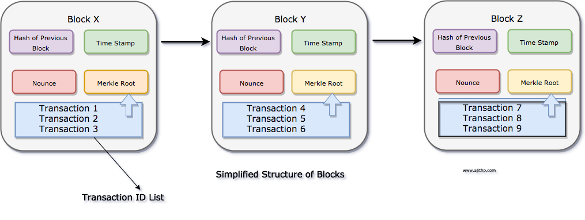
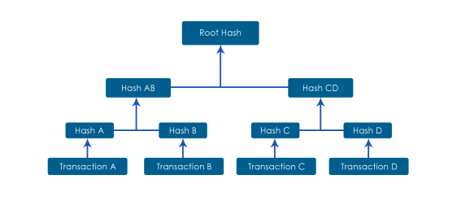

<!doctype html>
<html lang="en">
  <head>
    <meta charset="utf-8">

    <title>Fundamentals of Backend and Blockchain Development</title>

    <meta name="author" content="Dhruvin Parikh">

    <meta name="apple-mobile-web-app-capable" content="yes" />
    <meta name="apple-mobile-web-app-status-bar-style" content="black-translucent" />

    <meta name="viewport" content="width=device-width, initial-scale=1.0, maximum-scale=1.0, user-scalable=no, minimal-ui">

    <link rel="stylesheet" href="../../reveal.js/css/reveal.css">
    <link rel="stylesheet" href="../../reveal.js/css/theme/black.css" id="theme">

    <!-- Code syntax highlighting -->
    <link rel="stylesheet" href="../../reveal.js/lib/css/zenburn.css">

    <!-- Printing and PDF exports -->
    <script>
      var link = document.createElement( 'link' );
      link.rel = 'stylesheet';
      link.type = 'text/css';
      link.href = window.location.search.match( /print-pdf/gi ) ? '../../reveal.js/css/print/pdf.css' : '../../reveal.js/css/print/paper.css';
      document.getElementsByTagName( 'head' )[0].appendChild( link );
    </script>

    <!--[if lt IE 9]>
    <script src="../reveal.js/lib/js/html5shiv.js"></script>
    <![endif]-->

    <style>
      .reveal .slides h1, .reveal .slides h2, .reveal .slides h3 {
        text-transform: none;
      }

      .two-column {
        display: flex;
        flex-wrap: wrap;
      }

      .two-column em {
        margin: 20px;
      }

      .reveal .big-and-bold {
        font-weight: bold;
        font-size: 135%;
      }

      .reveal .shrunk-a-bit {
        font-size: 90%;
      }

      .reveal .shrunk-a-bit pre {
        width: 100%;
      }

      .reveal pre {
        width: 100%;
      }

      .reveal .highlight {
        color: yellow;
        font-weight: bold;
      }

      .reveal .highlightRed {
        color: red;
        font-weight: bold;
      }
      .left {
        left:-8.33%;
        text-align: left;
        float: left;
        width:50%;
        z-index:-10;
      }

      .right {
        left:31.25%;
        top: 75px;
        text-align: left;
        float: right;
        z-index:-10;
        width:50%;
      }
    </style>
  </head>

  <body>
    <div class="reveal">
      <div class="slides">

<!------------------------------------------------------->


<section data-markdown><script type="text/template">

## CSBC 1000 - Fundamentals of Backend and Blockchain Development

### Class 12: Revision

*Dhruvin Parikh*

</script></section>


<section data-markdown><script type="text/template">

## Class Plan
* Milestone #2 Presentation
* Three tier architecture
* Software Design Principles
* DLT (digital ledger platform)
* Product development process
* Cryptography and security
* Bitcoin, Ethereum & HLF 
</script></section>

<section data-markdown><script type="text/template">

## Presentation Sequence

1. Group E
2. Group F
3. Group B
4. Group D
5. Group C
</script></section>


<section data-markdown><script type="text/template">

## DBMS architecture

* **Single tier architecture** 
  * Client, server and database reside on same machine
* **Two tier architecture**
  * Server and database reside on same machine
* **Three tier architecture**
  * functional processes, logic, data access, data storage and UI interface done independently a separate modules
</script></section>


<section data-markdown><script type="text/template">

## Three tier DBMS architecture diagram


</script></section>

<section data-markdown><script type="text/template">

## Layers of 3 tier architecture

* **Presentation layer**
  * HTML, JavaScript, CSS
* **Application layer**
  * Java, .NET, C#, Python, C++
* **Database server**
  * MySQL, PostgreSQL, SQL Server, MongoDB

</script></section>

<section data-markdown><script type="text/template">
  
  ## High level design

  
  
</script></section>
  
  

<section data-markdown><script type="text/template">
  
  ## Three tier application architecture

  
  
  
</script></section>
  


<section data-markdown><script type="text/template">
  
  ## Backend development
  
  * Selecting database (SQL v/s NoSQL)
  * Application configuration
  * Code Review
  * Testing - unit, integration, system, acceptance
  * Technical debt
  * **Deployment environments**
    * Development, testing, staging, production 
  
</script></section>


<section data-markdown><script type="text/template">
  
  ## Development stacks
  
  * LAMP stack - Linux Apache MySQL PHP
  * MEAN stack - MongoDB Express Angular Node
  * MERN stack - MongoDB Express React Node
  * JAM stack - Javascript API Markup
  
</script></section>


<section data-markdown><script type="text/template">

## Common programming paradigms

* Procedural Programming
  * sequentially ordered operations
* Functional Programming
  * Re-use functions
* Object Oriented Programming
  * Encapsulation, Inheritance and Polymorphism

</script></section>
  
  
<section data-markdown><script type="text/template">

## SOLID principles

* High quality software program : 
  * Understandable
  * Upgradeable
  * Maintainable
</script></section>


<section data-markdown><script type="text/template">
  
## Simple Responsibility Principle

* A function or class should have only one reason to change
* If a class or function has to be be refactored due to change in logic than it has more than one responsibility 
* Passing class object as a parameter is known as dependency injection
  
</script></section>

<section data-markdown><script type="text/template">

## Open Closed Principle
* Class or function should be open for extension and closed for modification

</script></section>


<section data-markdown><script type="text/template">

## Liskov Substitution Principle

* Code (behaviour) can be shared between a class and its derived classes called “subclasses”
  
</script></section>


<section data-markdown><script type="text/template">

## Interface Segregation Principle
  
* Interfaces should not contain code that the end client (user of your code) will not use
  
</script></section>

  
<section data-markdown><script type="text/template">

  ## Dependency Inversion Principle
  
  * Invert the order of dependencies in code
  * The low level information becomes concrete implementation of abstract high level information
  * High level code is independent of details beneath it
  * Low level implementations should depend on abstractions above them
</script></section>
  
<section data-markdown><script type="text/template">

## Why decentralize?

* Eliminate Single Points of Failure
  * If everyone relies on a centralized service, everyone loses service if it breaks or goes away
* Diffuse control
  * Absolute power corrupts absolutely
  * Better to give large numbers of people little bits of power

</script></section>


<section data-markdown><script type="text/template">

## Meanings of decentralization

* Architectural decentralization
  * Many computers instead of one
* Political decentralization
  * Many people controlling the system
* Logical decentralization
  * Many different variations of protocols or data
    * Blockchains are logically *centralized*

</script></section>

<section data-markdown class="smallCode"><script type="text/template">

## web3/dapps

* Concept for a semi-decentralized application
* Usually uses normal URLs, but your identity and authorization is isolated from the websites
* The blockchain is used as a back-end
  * But: Most dapps use a normal back-end as well
  * Large amounts of data can be verified by merkle trees

</script></section>
  

<section data-markdown><script type="text/template">

## DApp architecture


</script></section>

<section data-markdown><script type="text/template">

## Agile manifesto (1/4)

* Our highest priority is to satisfy the customer through early and continuous delivery of valuable software.
* Welcome changing requirements, even late in development. Agile processes harness change for the customer’s competitive advantage.
* Deliver working software frequently, from a couple of weeks to a couple of months, with preference to the shorter timescale.

</script></section>

<section data-markdown><script type="text/template">

## Agile manifesto (2/4)

* Business people and developers must work together daily throughout the project.
* Build projects around motivated individuals. Give them the environment and support they need, and trust them to get the job done.
* The most efficient and effective method of conveying information to and within a development team is face-to-face conversation.

</script></section>

<section data-markdown><script type="text/template">

## Agile manifesto (3/4)

* Working software is the primary measure of progress.
* Agile processes promote sustainable development. The sponsors, developers, and users should be able to maintain a constant pace indefinitely.
* Continuous attention to technical excellence and good design enhances agility.

</script></section>


<section data-markdown><script type="text/template">

## Agile manifesto (4/4)

* Simplicity -- the art of maximizing the amount of work not done -- is essential.
* The best architectures, requirements, and designs emerge from self-organizing teams.
* At regular intervals, the team reflects on how to become more effective, then tunes and adjusts its behavior accordingly.

</script></section>

<section data-markdown><script type="text/template">

## Scrum

* Scrum Artifacts
* Scrum roles
* Scrum ceremonies

</script></section>

<section data-markdown><script type="text/template">

## Scrum roles

* Development team
* Product owner
* Project manager
* Scrum master

</script></section>


<section data-markdown><script type="text/template">

## Scrum ceremonies

* Sprint planning
* Daily scrum
* Sprint review (demo)

</script></section>

<section data-markdown><script type="text/template">

## Sprint process


</script></section>

<section data-markdown><script type="text/template">

## Cryptography

* Way to hash and unhash the messages using a pass key 
* Types of cryptography
  * Symmetric key Cryptography
  * Asymmetric key Cryptography 

</script></section>

<section data-markdown><script type="text/template">

## Symmetric key Cryptography

<div class="left" style="width:50%;">
  
</div>
<div class="right" style="width:35%;">
    Sender and receiver generates and uses fresh key every-time to encrypt and decrypt messages.
</div>

</script></section>

<section data-markdown><script type="text/template">

## Asymmetric key Cryptography

<div class="left" style="width:50%;">
  
</div>
<div class="right" style="width:35%;">
    A message signed using public key can be decrypted using private key and vice versa.   
</div>

</script></section>

  
<section data-markdown><script type="text/template">

## Public and private keys
  
* Use good randomness to choose a private key
  * Always keep your private key secret!
* Each private key has a corresponding public key
  * Your public key is your bitcoin/ethereum address

</script></section>

<section data-markdown><script type="text/template">

## Public keys and addresses

* secp256k public keys are 64 bytes
* Ethereum addresses are 20 bytes
* To compute an ethereum address from a public key:
  * Hash public key with keccak256 (giving 32 bytes)
  * Take *last* 20 bytes of hash
  * Encode as hexadecimal
  * Prefix with "0x"
  * Optional: Compute checksum

</script></section>

<section data-markdown><script type="text/template">

## Birth of Blockchain technology


</script></section>

<section data-markdown><script type="text/template">

## Blockchain
* Peer to peer 
* Group of nodes
* Miners
* Transaction
* Block
* Consensus
* Token
* State
* Smart contract
    
</script></section>

<section data-markdown><script type="text/template">

## Block structure

* Decentralized public database that keeps a permanent record of the digital transactions

</script></section>

<section data-markdown><script type="text/template">

## Merkle tree


</script></section>

<section data-markdown><script type="text/template">

## Consensus

* Need for consensus
* Two general's problem
* Byzantine Generals Problem
</script></section>

<section data-markdown><script type="text/template">

## What is Ethereum

* Decentralized platform to run smart contracts
  * no single point of failure
  * censorship resistant
* Account-based model
* Distributed state machine
  * block of transaction modeled as state transition function

</script></section>


<section data-markdown><script type="text/template">

## Ethereum

* Ethereum has a native asset called Ether
  * basis of value in Ethereum ecosystem
  * need to align incentives
  * given to miners as reward to mint blocks

</script></section>

<section data-markdown><script type="text/template">

## Ethereum vs Bitcoin

* Ethereum : Smart contract platform
  * Complex but feature-rich
  * Turing complete scripting language
  * Account based model
* Bitcoin : Decentralized asset
  * Simple and robust
  * Simple stack based language; not Turing complete
  * UTXO based model 
</script></section>


<section data-markdown><script type="text/template">

## EVM (Ethereum Virtual Machine)


</script></section>
  
<section data-markdown><script type="text/template">

## Public permissionless blockchains

* Public networks
* Open to anyone, 
* Participants interact anonymously
  * Bitcoin
    * UTXO model
  * Ethereum
    * Account model
    * Smart contract
</script></section>

<section data-markdown><script type="text/template">

## Limitation of public permissionless technologies

* Identity of participant
  * KYC and AML regulations
* Low transaction throughput
* High transaction confirmation latency
* Privacy and confidentiality of transactions
</script></section>

<section data-markdown><script type="text/template">

## Enter Hyperledger Fabric

* Open source 
* Enterprise-grade 
* Permissioned DLT platform
* Established under linux foundation
</script></section>

<section data-markdown><script type="text/template">

## HLF transaction flow


</script></section>
    

<section data-markdown><script type="text/template">

## Resources

* Learn web3 - [https://sandbox.eth.build](https://sandbox.eth.build/?)

</script></section>


<section data-markdown><script type="text/template">

## End of Class

</script></section>


<!------------------------------------------------------->


      </div>

    </div>

    <script src="../../reveal.js/lib/js/head.min.js"></script>
    <script src="../../reveal.js/js/reveal.js"></script>
    <script src="../../reveal.js/plugin/zoom-js/zoom.js"></script>

    <script>

      // Full list of configuration options available at:
      // https://github.com/hakimel/reveal.js#configuration
      Reveal.initialize({
        controls: true,
        progress: true,
        history: true,
        center: true,

        transition: 'none', // none/fade/slide/convex/concave/zoom

	math: {
          mathjax: '../lib/MathJax/MathJax.js',
          config: 'TeX-AMS_SVG-full',
	},

        // Optional reveal.js plugins
        dependencies: [
          { src: '../../reveal.js/plugin/markdown/marked.js', condition: function() { return !!document.querySelector( '[data-markdown]' ); } },
          { src: '../../reveal.js/plugin/markdown/markdown.js', condition: function() { return !!document.querySelector( '[data-markdown]' ); } },
          { src: '../../reveal.js/plugin/highlight/highlight.js', async: true, callback: function() { hljs.initHighlightingOnLoad(); } },
          { src: '../../reveal.js/plugin/math/math.js', async: true }
        ]
      });

    </script>

  </body>
</html>